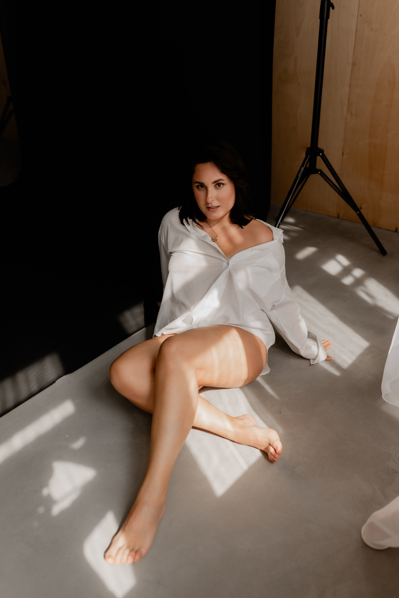
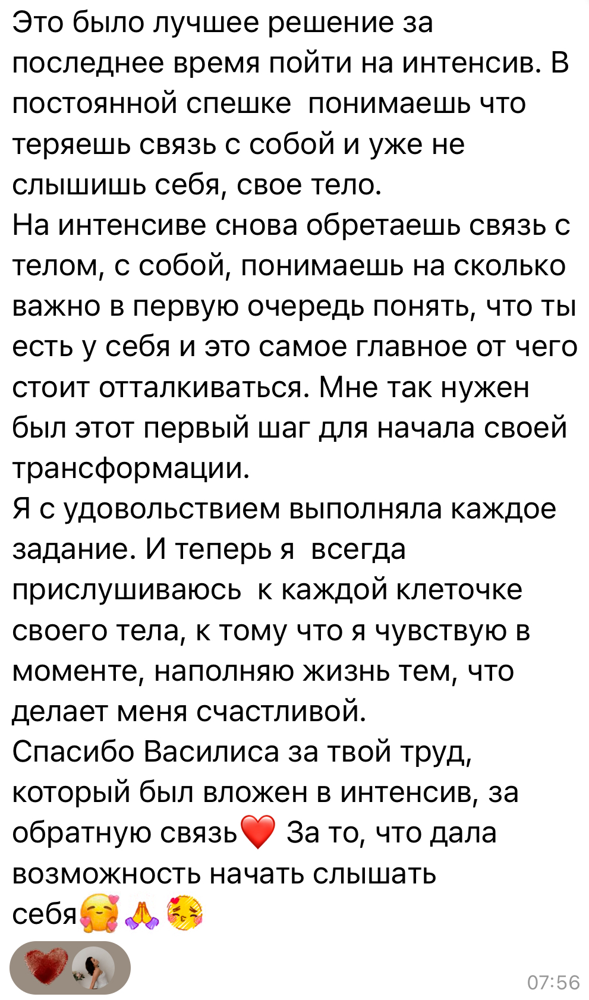
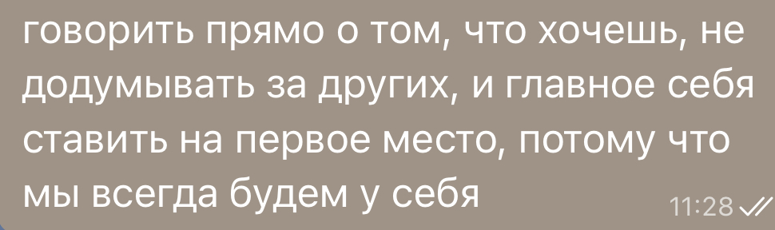
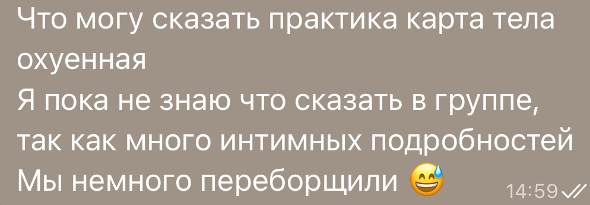
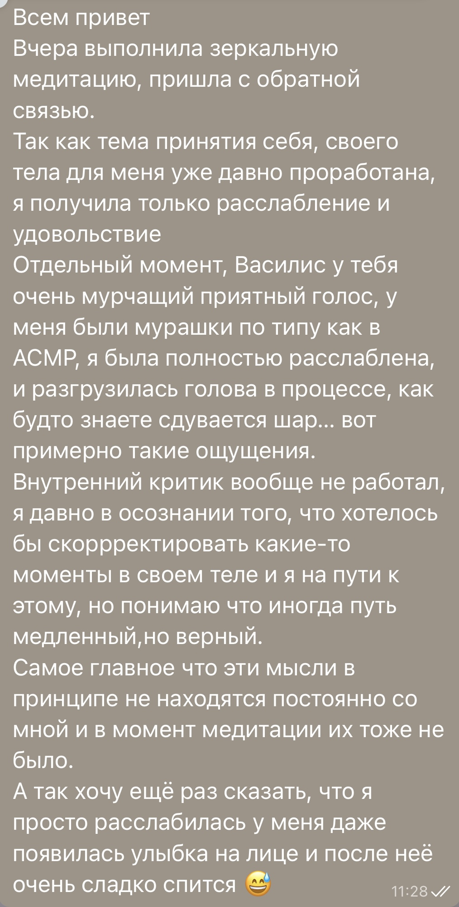
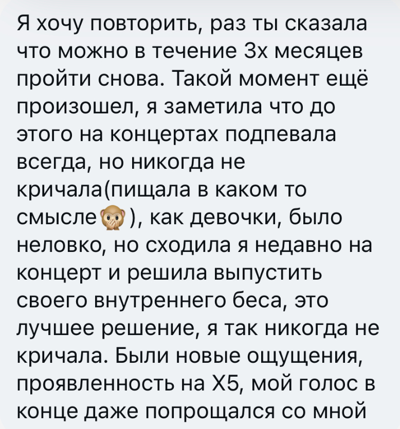

Практический интенсив
Код Удовольствия
10-дневная глубокая перезагрузка для каждой девушки, которая устала от контроля и хочет кайфа.

Философия
Манифест интенсива
Я создала этот интенсив не для того, чтобы вы зубрили теорию. Мне не хотелось делать очередной «курс про секс» с говорящей головой. Мне хотелось действия.
Знакомо чувство, когда смотришь на другую девушку и думаешь: «Да что она такого делает? Наколдовала, что ли?» Вроде бы ничего особенного, а парни бегут по первому зову, дарят айфоны, засыпают вниманием и готовы свернуть горы, просто потому что она — это она. А ты в это время сидишь с контролем, всё тащишь на себе и думаешь: «А со мной что не так?»
Всё дело не в магии, а во внутренней оптике. На интенсиве мы учимся:
- Выключить внутренний стресс и зажатую челюсть от вечной гонки.
- Найти свои личные «кнопки» удовольствия, возвращая голос и свободу своему телу.
- Перестать сканировать себя перед зеркалом каждое утро и разрешить себе кайфовать без вины и стыда.
Это 10 дней глубокой трансформации, которую ты проходишь в своем собственном темпе и забираешь в реальную жизнь.
Аудитория
Для кого этот интенсив?
Абсолютно для каждой. Неважно, в отношениях ты, свободна, у тебя был сложный опыт или его не было вообще.
В отношениях
Хочешь вернуть искру, глубину и убрать бытовой застой? Подойдет на 100%.
Свободна
Устала от неопределенности и не понимаешь, почему выбираешь «не тех»? Подойдет.
С багажом опыта
Накопила внутренние блоки, стыд и страхи? Тем более подойдет.
Мы работаем с базой самой себя, а не с тем, как «быть удобной для мужчины».
Трансформация
Что убираем / Что забираем
Что оставляем в прошлом:
- Жёсткий контроль и хроническое напряжение — того самого внутреннего контролёра, который заставляет держать всё в узде и не разрешает себе просто выдохнуть.
- Ощущение, что почва под ногами и та самая опора периодически ускользают, стоит жизни подкинуть стресса.
- Привычку жить по стандартным сценариям, оглядываться на чужие оценки и заслуживать любовь вместо того, чтобы наконец выбрать себя.
Что забираем с собой:
- Глубокий покой, внутреннюю гармонию и прочный внутренний стержень, который остается с тобой независимо от внешних штормов.
- Истинную нежность, мягкость и бережное отношение к себе вместо утренней критики перед зеркалом.
- Свои собственные, уникальные точки удовольствия и тот самый вкус к исследованию себя — без спешки, стыда, шаблонов и навязанных рамок.

Программа
Дни 1 – 5: Фундамент и тело
День 1. Диагностика установок. Убираем мусор из головы и перестаем подстраиваться под чужие ожидания.
День 2. Работа с зажимами в теле. Возвращаем дыхание, убираем телесные блоки, которые душат либидо и энергию.
День 3. Сексуальность как энергия. Перестаем воспринимать секс через призму «стыдно/нельзя».
День 4. «Код отражения». Та самая зеркальная медитация. Учимся смотреть на себя без критики.
День 5. Ловушка «музы» и «наставницы». Почему пытаться быть для мужчины удобной учительницей — тупик для близости.
Программа
Дни 6 – 10: Состояние и закрепление
День 6. Свобода от оценок. Выстраиваем личные границы без чувства вины и извинений за себя.
День 7. Внутренняя опора. Закрепляем состояние «я офигенная» 24/7 независимо от внешних обстоятельств.
День 8. Качество коммуникации. Почему честный диалог и отсутствие запретов важнее любых заученных «техник».
День 9. Энергия желания. Учимся хотеть и получать без внутреннего сопротивления.
День 10. Твой личный код. Интегрируем практики в реальную жизнь и строим свою систему кайфа.
Формат
Результат и поддержка
Приятные побочные эффекты: Когда меняется твоя внутренняя оптика, вокруг меняется абсолютно всё. Мужчина начинает зажимать тебя на каждом углу, дарить цветы без повода, бронировать отель для свиданий и смотреть так, будто ты единственное, что имеет значение.
Как это устроено:
- Только практика, аудио, видео и наглядные материалы
- Индивидуальный формат, который подойдет каждой
- Возможность задать любой вопрос мне как психологу и сексологу
- Специальный бонус: первая личная консультация для участниц по специальной цене (2 500 ₽)
Отзывы
Что говорят участницы
Живые сообщения и скриншоты из нашего чата:





Вопросы
Частые вопросы
Подойдёт ли, если я не в отношениях (или наоборот)?
Да, на 100%. Интенсив про твоё тело, дыхание и отношение к себе, а не про то, как быть удобной для мужчины.
У меня нет опыта в таких практиках. Это страшно?
Совсем нет, можно начинать с нуля. Практики бережные, темп выбираешь ты сама. Если что-то непонятно или некомфортно — всегда можно написать мне в чат.
Кто отвечает на вопросы и как всё проходит?
Я лично в твоём чате все 10 дней интенсива. Отвечаю, поддерживаю, могу записать голосовое.
Сколько времени нужно уделять в день?
От 10 до 30 минут в день в удобное для тебя время.
Заменяет ли интенсив личную терапию?
Нет. Интенсив — это телесные и психологические практики для работы с состоянием, а не клиническая терапия.